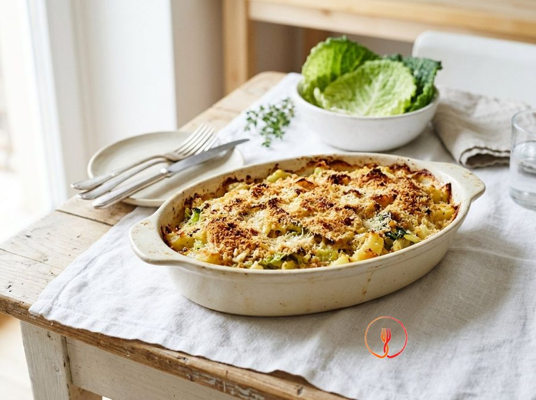

Trentino-style Potato and Savoy Cabbage Bake
A rustic mountain recipe that transforms affordable winter vegetables into a hearty one-pot meal. The crispy gratin top makes it a favourite even for children.
This savory pie is a classic of mountain tradition, where potatoes and cabbage create a soft, flavorful heart. The butter and breadcrumb topping provides a pleasant gratin crust in every bite.
Ingredients
- Yellow-fleshed potatoes800 g
- Savoy cabbage500 g
- Medium eggs2 pcs
- Grana Padano or Parmesan cheese (traditional Italian hard aged cheeses)60 g
- Semi-skimmed milk50 ml
- Breadcrumbs30 g
- Butter10 g
- Nutmeg1 pinch
Allergens
Eggs, Milk, Gluten
Method
- Begin by thoroughly washing 800g of yellow potatoes under running water to remove any soil. Place them in a large pot, cover completely with cold, lightly salted water, and bring to a boil over medium heat, cooking for about 25-30 minutes. Check for doneness by piercing them with a fork: if it slides easily to the centre without resistance, the potatoes are ready. You will have tender but intact tubers, ready to be transformed into a silky base. The chef's secret is to always start with cold water to ensure even cooking between the core and the outer part of the potato.
- While the potatoes are boiling, take 500g of savoy cabbage, remove the tougher outer leaves, and cut the heart into thin strips about one centimetre wide. Plunge the cabbage into plenty of boiling salted water and blanch for exactly 10 minutes, maintaining a steady boil. Once ready, drain it and press firmly in a fine-mesh sieve or squeeze it between your hands to remove all excess water. The cabbage should appear wilted but still firm and very dry. Remember that well-drained cabbage is essential to prevent the flan from becoming watery once sliced.
- Peel the potatoes while they are still hot, protecting your hand with a clean tea towel to avoid burns. Pass them immediately through a potato ricer directly into a large, deep bowl, to retain the heat that makes the starch more workable. You will obtain a soft, lump-free purée that releases an earthy and fresh aroma. Working with hot potatoes is the fundamental trick for achieving an airy and homogeneous consistency. Do not wait for them to cool down, as they would become sticky and difficult to blend correctly.
- To the bowl with the mashed potatoes, add the well-squeezed cabbage, 2 medium whole eggs, 60g of grated Grana cheese, and 50ml of semi-skimmed milk. Complete with a generous pinch of freshly grated nutmeg to enhance the mountain flavours. Stir vigorously with a wooden spoon or spatula until all ingredients are perfectly distributed. The result should be a thick, creamy mixture with a variegated colour between the yellow of the potatoes and the green of the cabbage. Make sure not to overwork the mixture so as not to stress the eggs, maintaining the desired fluffiness.
- Prepare the rectangular or circular baking tin by evenly greasing the bottom and sides with 10g of softened butter at room temperature. Take 15g of breadcrumbs (half of the total) and distribute them in the tin, shaking it sideways so they adhere perfectly to every buttered surface. Remove any excess crumbs by gently tipping the tin upside down. This step will create a thin protective layer that will make extracting the flan easier. The chef's tip is to use 'pomade' butter (softened) rather than melted, to create an adherent and even layer for the breadcrumbs.
- Transfer the potato and cabbage mixture into the prepared baking tin, spreading it with the help of a spatula. Carefully level the surface using the back of a moistened spoon, trying to achieve a uniform thickness throughout the tin for even baking. Lightly tap the tin on the worktop to remove any air bubbles trapped in the mixture. The surface should appear smooth and ready for the crispy finish. Precise levelling ensures that the flan does not develop cracks or overly dry areas after being in the oven.
- Sprinkle the surface of the flan with the remaining 15g of breadcrumbs, distributing them thoroughly to cover every corner. Place the tin in a preheated static oven at 200°C and bake for about 25 minutes on the middle shelf. You should observe the formation of an inviting golden crust, while the edges will begin to pull away slightly from the sides of the tin. If after 20 minutes the surface is still pale, turn on the grill function for the last 120 seconds. The aroma of toasted cheese and cabbage will indicate that the cooking is perfectly completed.
- Remove the flan from the oven and let it rest at room temperature for at least 5-10 minutes before slicing. This short waiting time is crucial because it allows the cabbage fibres and egg proteins to stabilise, ensuring compact and clean slices. Cut the flan into squares or wedges and serve while still hot to enjoy its tender interior. You will have a dish with a soft heart and a crunchy crust, perfect as a rich side dish or a light main course. For a perfect cut, use a smooth-bladed knife slightly dampened with water.
Tips
- Carefully squeeze the cabbage after cooking to prevent it from releasing excess moisture into the pie.
- Mash the potatoes while they are still hot to achieve a smoother and more velvety consistency.
- Let the pie rest outside the oven for ten minutes before slicing for perfect portions.
Variations
- Add cubes of aged local cheese to the mixture for a stretchier, heartier result.
- Replace the Parmesan with Pecorino cheese for a sharper and bolder flavor.
Nutrition facts (estimate)
| Per serving (310 g) | Per 100 g | |
|---|---|---|
| Energy | 1393 kJ / 333 kcal | 449 kJ / 107 kcal |
| Protein | 14.5 g | 4.7 g |
| Carbohydrates | 48.4 g | 15.6 g |
| of which sugars | 5.2 g | 1.7 g |
| Fat | 9.5 g | 3.1 g |
| of which saturates | 5.2 g | 1.7 g |
| Fibre | 7.5 g | 2.4 g |
| Salt | 1.1 g | 0.4 g |
AI estimates based on average CREA / USDA data: indicative only, not a substitute for medical or dietitian advice.
Open the recipe in the app for the shopping list, ingredient sheets and nearby shops.